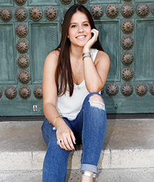

About Me
Welcome! My name is Briana Nespral! I was born and raised in Miami, Florida to a big, Cuban family. I am a sophomore at the University of Miami aspiring to one day become a news anchor. As a broadcast journalism major, I am interested in the wide spectrum that TV has to offer, from in front of the camera to behind the camera. I would like to work firsthand with professionals and get full experience in the industry. This field of work is growing rapidly and I would love to be a part of it, adding my own flare to the industry.
Contact Me
- bsn12@miami.edu
- (786)239-6233